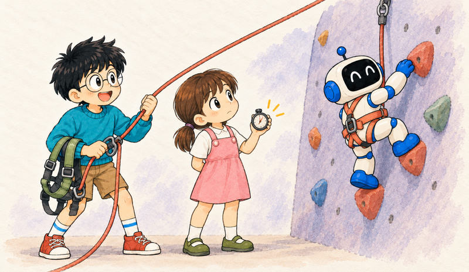
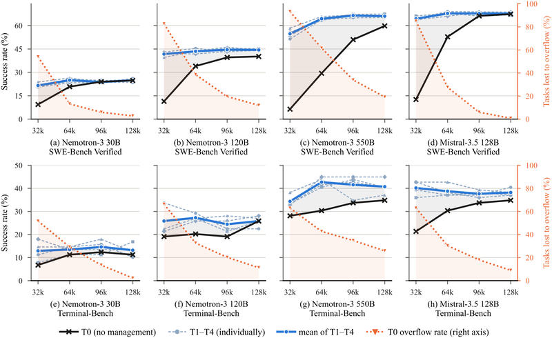
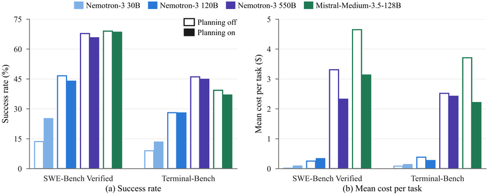

Feature 02 · ARTICLE · 2026 09
An Empirical Study of Harness Design for Coding Agents
Coding agents work inside a harness: software that keeps a plan, turns the model’s intentions into actions, and decides what history the model still sees. We built a lightweight harness with a fixed execution loop and varied three components: planning, the action space, and context management. We ran four models on SWE-Bench Verified and Terminal-Bench 2.1 across 176 matched settings. No component helps everywhere. Context management matters most when the context window is tight, and most of its benefit comes from preventing overflow. Staging rule-based elision before LLM summarization is the most efficient strategy; making elided content recoverable adds machinery models rarely use and gains no accuracy. Planning is an accuracy scaffold for weaker models and a cost saver for stronger ones. Predefined tools help models weak at bash, while bash-capable models do well with bash alone at substantially lower cost, especially on command-line tasks.

The question
Most studies evaluate harnesses as complete systems. A cross-harness evaluation by Cao et al. (2026) found Claude-Opus-4.5 performs best with OpenHands and Claude-Sonnet-4.5 with SWE-Agent, but such comparisons conflate mechanisms: a difference between two agents doesn’t say whether it came from planning, tools, context management, or their interaction with the model. We ask whether each component is generally useful, or whether its effect depends on model capability, task type, and budget.
Our harness follows a ReAct loop. Safety gates, post-edit diagnostics, and stuck detection stay fixed. Three things vary:
Planning. The model keeps an explicit plan through an
update_plantool, and the current plan is injected before each turn.Action space. Either a predefined tool set (
read_file,edit_file,grep_text, and others, plusbash) orbashalone. The change swaps the whole interface, including file-state tracking and automatic diagnostics, not only the tool count.Context management. Five tiers. T0 does nothing and terminates when the window overflows. T1 elides stale tool outputs. T2 adds recall, storing elided outputs so
recall_eventcan bring them back. T3 summarizes old history with an LLM. T4 elides at a soft threshold, summarizes at a hard one, and keeps recall.
The models are three sizes of Nemotron-3 (30B, 120B, 550B) and Mistral-Medium-3.5-128B as a cross-family comparison. We use them as probes of capability and interaction style, not as permanent optimization targets. Context management runs at 32k, 64k, 96k, and 128k windows; planning and the action space are ablated only at T4/128k.
Context management

Its value shrinks as the window grows. Averaged across models, the gap between managed tiers and T0 falls from 35.7 to 15.9, 5.5, and 2.7 percentage points on SWE-Bench, and from 9.5 to 7.5, 4.8, and 2.8 on Terminal-Bench. The gap tracks overflow: T0 loses 78.7% of SWE-Bench tasks to overflow at 32k and 8.7% at 128k, while managed tiers never overflow. Context management is valuable largely because it prevents premature truncation when the window binds. It extends trajectories without substantially altering what the agent does in them.
T4 matches the other managed tiers on success and has the lowest cost in seven of eight model–benchmark panels. Its early elision seems to handle many cases before summarization is needed, which cuts costly summarization calls.
Recall does not pay for itself. T1 and T2 differ only in recall: across 32 comparisons, T2 wins 15, loses 14, and ties three, with a mean difference of -0.36 points. Of the 64 settings that offer recall, 36 never call it. Use concentrates under the tightest windows and almost entirely in Nemotron-3 30B; its heaviest-use configuration averages 4.326 calls per task and scores 3.37% below T1.
Planning

For Nemotron-3 30B, planning raises success by 11.6 points on SWE-Bench and 4.5 on Terminal-Bench, at higher cost. Without it, the median SWE-Bench run shrinks from 40 turns to 5, and 68.6% of runs end without an edit, against 27.8% with planning. Planning keeps the weakest model alive long enough to attempt a fix.
For Nemotron-3 120B, planning yields no consistent gain. For Nemotron-3 550B and Mistral, it cuts SWE-Bench cost by roughly 30% and 32%, while success falls by 2.0 and 0.4 points. Median runs shorten from 108 to 74 turns and from 68 to 53, and most of the removed turns are redundant verification after the edit. Planning improves when these models stop, not how fast they find or repair the bug. On Terminal-Bench it both extends runs that would end too soon and trims the long tail; the balance sets each model’s cost.
Action space
Predefined tools scaffold weaker models. For Nemotron-3 30B, they raise success by 15.0% on SWE-Bench and 10.1% on Terminal-Bench. Without them, the model falls back on tool calls learned in training that the bash-only registry cannot execute; on Terminal-Bench, 66% of its bash-only runs end after such calls, and the average run drops from 71 turns to 15.
Capable models do better with the shell. For Nemotron-3 550B, bash-only raises success by 3.6% on SWE-Bench and 5.6% on Terminal-Bench while cutting cost by 53% and 30%, with fewer and denser calls. Across all four models, bash-only reduces re-patching of already edited files; for 550B, from 4.6 to 1.5 per task. Predefined tools lower the complexity of each action, but often by multiplying the interactions needed for the same work.
Mistral marks the boundary. Full tools improve its SWE-Bench success by 23.2%, yet bash-only adds 6.7% on Terminal-Bench, where it already sends 71.9% of its actions through bash. With bash only, 32.8% of its SWE-Bench runs end without editing a file, against 1.2% with full tools. The result is a trade-off between accuracy and cost, not uniform dominance.
Harness design is a conditional systems problem: each component should be chosen for the model, task, and budget, not adopted as a default.
Limits
These are effects of specific implementations, not a universally optimal harness. The action-space change bundles tools, prompts, state tracking, and diagnostics, so it does not isolate tool count or granularity. Planning and the action space were tested only at T4/128k. Each setting ran once per task, and Terminal-Bench has only 89 tasks, so many of its contrasts are not significant; conclusions there rest on consistent directions across models and budgets. SWE-Bench Verified is Python-only, and model size is an imperfect proxy for capability. The crossover points should be validated before they are carried to other model families, harnesses, or tasks.